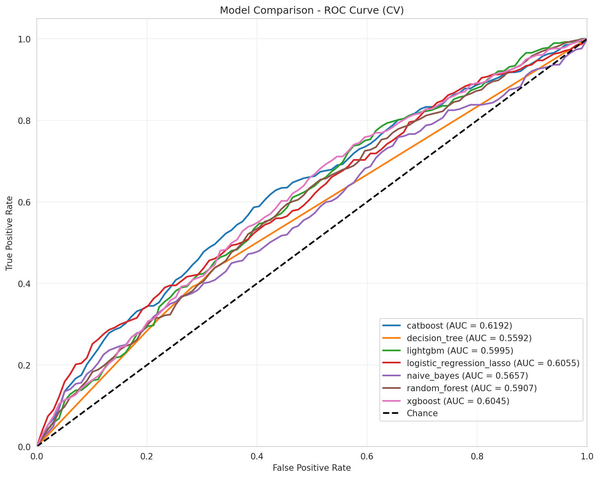
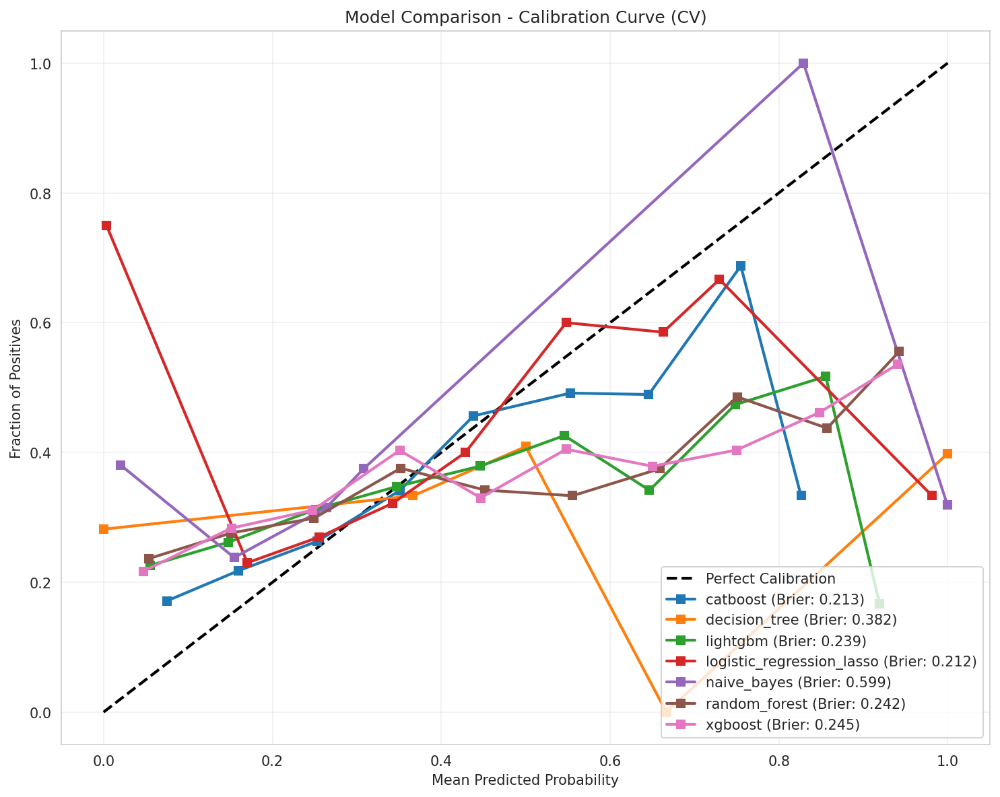
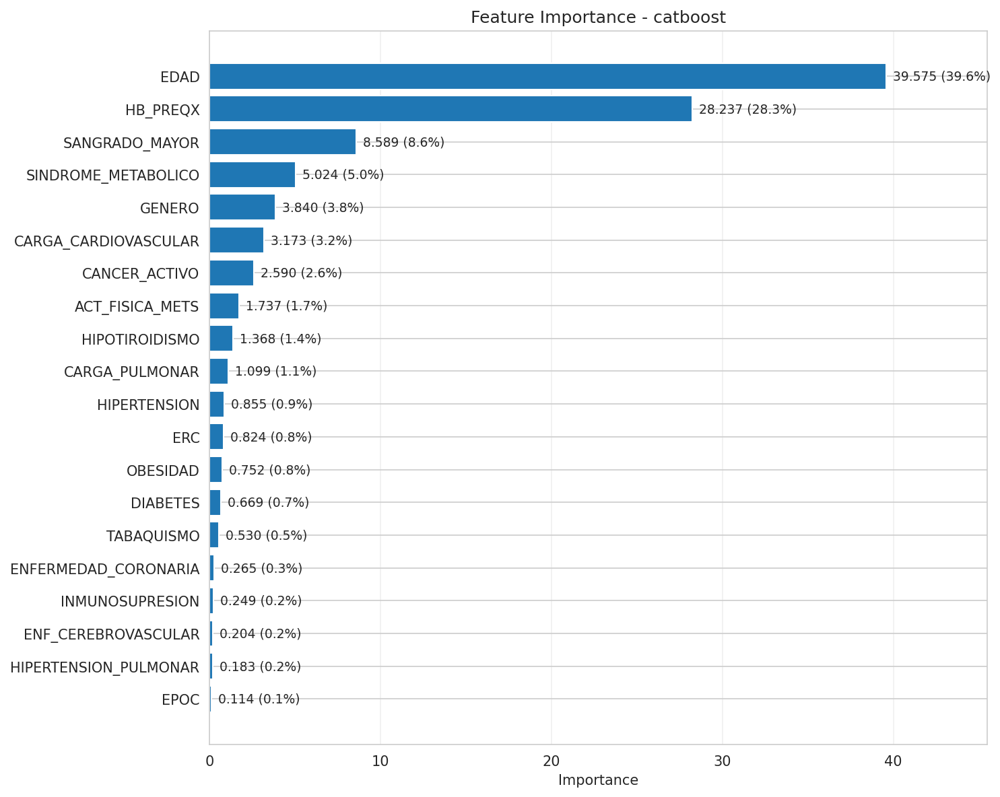

Fase · Fase 2
EXPERIMENTO 2 - FEATURES AGREGADAS
Objetivo: evaluar impacto de variables agregadas (sindromes, cargas)
| Modelo | AUC ROC | Brier Score | Δ vs Exp1 | Posicion |
|---|---|---|---|---|
| catboost | 0.6192 | 0.2133 | +0.0039 | 1 |
| logistic_regression_lasso | 0.6055 | 0.2122 | 0.0000 | 2 |
| xgboost | 0.6045 | 0.2453 | +0.0095 | 3 |
| lightgbm | 0.5995 | 0.2388 | +0.0052 | 4 |
| random_forest | 0.5868 | 0.2421 | -0.0008 | 5 |
| naive_bayes | 0.5657 | 0.5986 | -0.0056 | 6 |
| decision_tree | 0.5568 | 0.3816 | -0.0087 | 7 |
ROC comparativa (Exp 2)

Calibracion comparativa (Exp 2)

Feature importance - catboost

SHAP Summary - catboost

Lectura
CatBoost mejora ligeramente a 0.6192 (+0.39%). Variables agregadas aportan: SINDROME_METABOLICO (5.03%), CARGA_CARDIOVASCULAR (3.18%), CARGA_PULMONAR (1.10%). EDAD (39.62%) y HB_PREQX (28.27%) mantienen dominancia. Brier estable 0.2133. Features agregadas aportan valor predictivo modesto.
Graficas actualizadas desde exp_02_aggregated_features - modelo catboost - plot_metadata.json
2